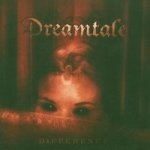

|
|
||
Dreamtale : Difference (2005) |
|

http://www.dreamtale.net |
1. Lost Souls 3:12 |
8/10 |
|
Difference es el tercer disco de la banda finlandesa Dreamtale, que sigue ofreciendo un power metal progresivo con aderezos neoclásicos en la línea de otras bandas de su entorno, como Stratovarius o Sonata Arctica. Con un nuevo cantante, Jarkko Ahola, siguen tratando de ofrecer algo que les haga sobresalir entre el montón de grupos que tocan un estilo similar. El disco mezcla temas rápidos, con el doble bombo como director de orquesta, como la apertura, "Lost Souls", con su pegadizo estribillo, "Wings of Icaros", melódica, con aportes neoclásicos y coros, "World's Child", trepidante y que podría haber compuesto Sonata Arctica, "Fly", bastante predecible aunque se salva el estribillo y algún momento de originalidad con la guitarra, "Secret Door", con partes realmente pomposas, coros y una melodía interesante que la configuran como una de las mejores canciones del álbum y "We are One", con cambios de ritmo y algunas secciones brillantes, con otras piezas más lentas, como "New Life", con otro fantástico estribillo, "Lucid Times", de ritmo pulsante y algunos pasajes instrumentales pomposos y espectaculares y tres baladas que son "Mirror", un tanto monótona, "Sail Away", acústica, vibrante en algunas partes, y "Green Fields" con partes acústicas y distorsionadas, que tampoco termina de llegar. La voz ligeramente rota y con ciertos problemas para llegar a tonos altos de Jarkko Ahola, es lo que más afecta a la puntuación de este disco. Bueno, eso y las baladas, que no terminan de cuajar, aunque quizás eso también se deba en parte a la voz de Jarkko. Por lo demás el disco está bien y tiene varios temas buenos con algunas partes muy buenas. No es que la voz lo estropee totalmente, ni mucho menos, pero da la impresión de que con otro cantante, este álbum habría ganado bastante. Supera al anterior, pero esta banda todavía puede hacerlo mejor. |
||
- Crítica escrita por Rubén Béjar - |
||